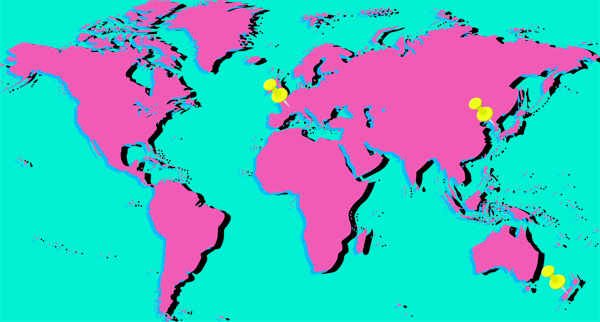

JANKEN!
Rock-Paper-Scissors in Other Countries

- In France, the game is called pierre, feuille, ciseaux.
- In South Korea, the game is called kawi, bawi, bo (가위, 바위, 보).
- In New Zealand, the game is called paper, scissors, rock.
I'll teach you something else while you're here.
There is a...